Meet the Team
Student-run from Leland High School, San Jose — builders, programmers, and outreach, guided by our head mentor.
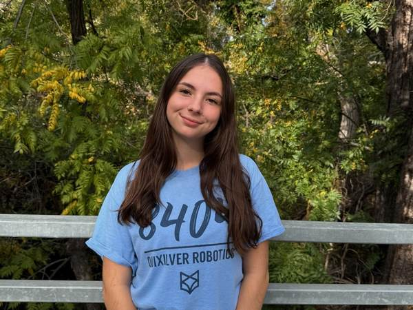
Ana Flacau (Co-Captain)
Junior at Leland; fourth season. Started in FLL programming and now leads across build and code.
Fun fact: backpacked ~60 miles of the Pacific Crest Trail.
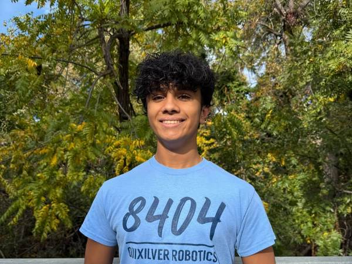
Ishaan Desai (Programming Lead, Co-Captain)
Junior; loves how simple components combine into capable robots.
Fun fact: favorite vegetable is carrots.
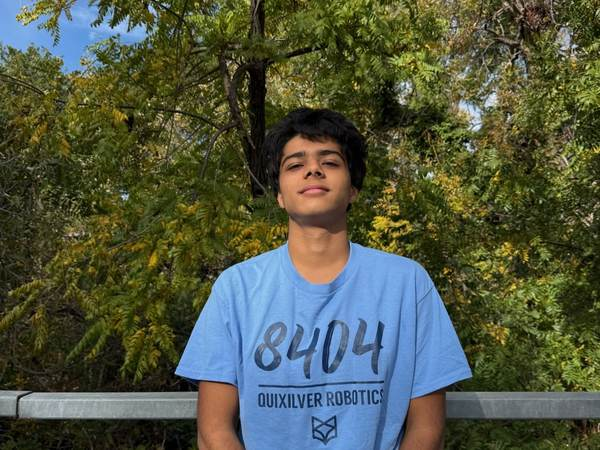
Jaiveer Bala (Mechanical Lead)
Freshman; third year on 8404. Mechanical at heart with side projects on the bench.
Fun fact: eats a whole cucumber every day.
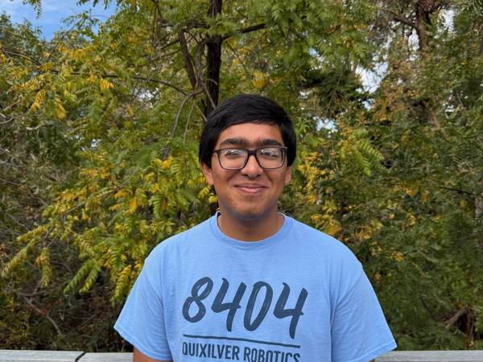
Farzan Islam (Outreach Lead)
Sophomore; second year, returning outreach member building on last season.
Fun fact: currently taking flight lessons.
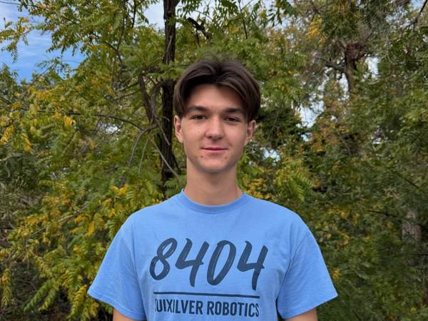
Daniel Pashkevich (Mechanical)
Sophomore; second year. Passionate about engineering for as long as he can remember.
Fun fact: has two younger brothers.
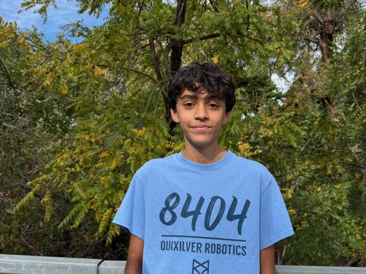
Aarav Choksi (Mechanical)
Freshman; first year with Quixilver. LEGO to VEX to FTC path, on the mechanical subteam.
Fun fact: born in the Netherlands.
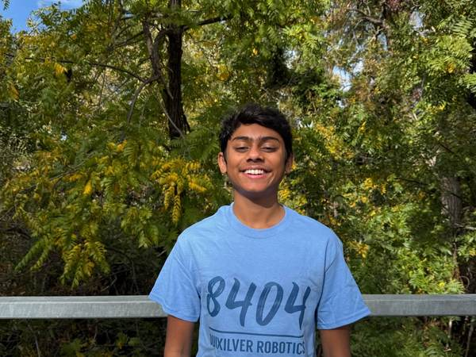
Siddharth Gandhi (Mechanical)
Freshman; first year in robotics. From LEGOs to eco-friendly hand builds.
Fun fact: playing ice hockey for 7+ years.
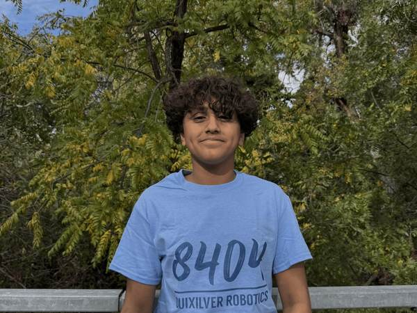
Charlie Sridhara (Mechanical)
Eighth grader at Bret Harte Middle; second year with 8404.
Fun fact: been to all seven continents.
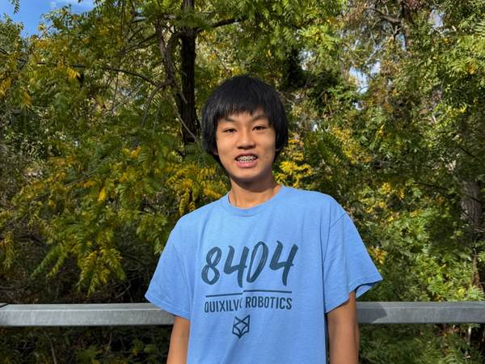
Rayden Khor (Programming)
Sophomore; second year. LEGO robotics background, loves logic-heavy programming.
Fun fact: enjoys collecting stationery.
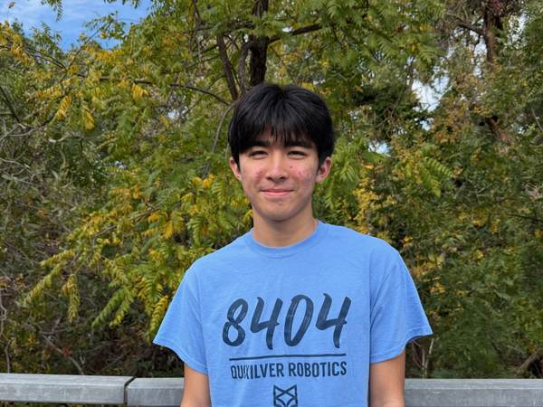
Tony Dung (Programming)
Sophomore; second year. Coding for 5 years, big collaborative projects.
Fun fact: has a pet corgi named Coco.
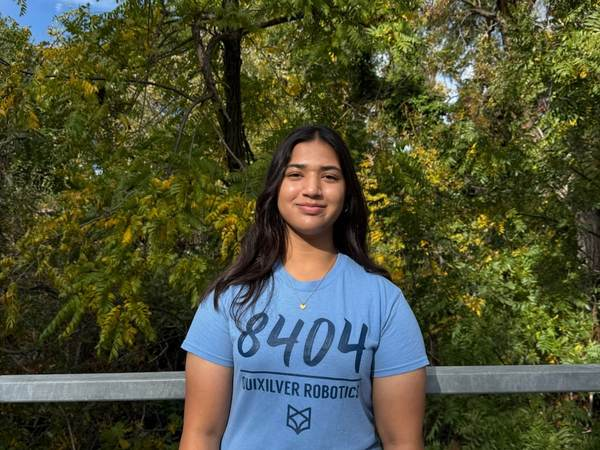
Sarina Qureshi (Outreach)
Freshman; third year on the team. Loves building, teaching, and creating.
Fun fact: loves murder mysteries and thrillers.
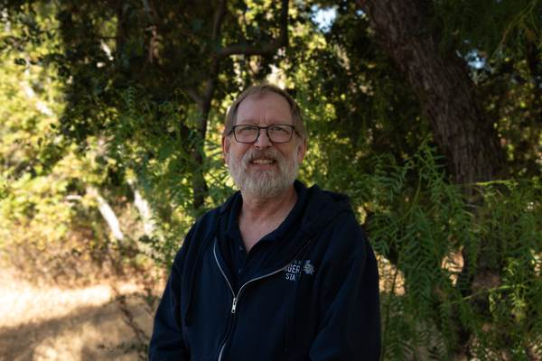
Mr. Kevin Tibbs (Head Mentor)
15 years in industrial research, teaching Physics and Electronics at Leland since 2008.
Fun fact: learning a language and climbing walls.